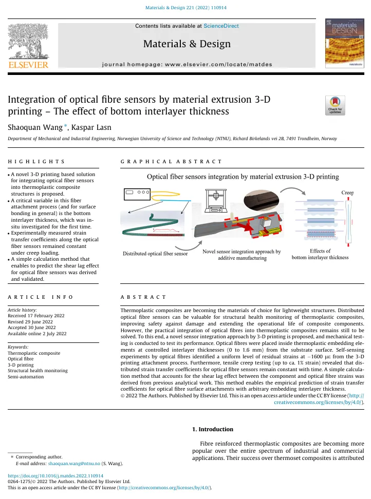
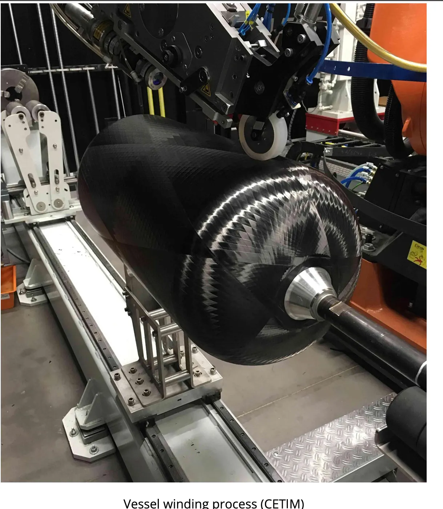
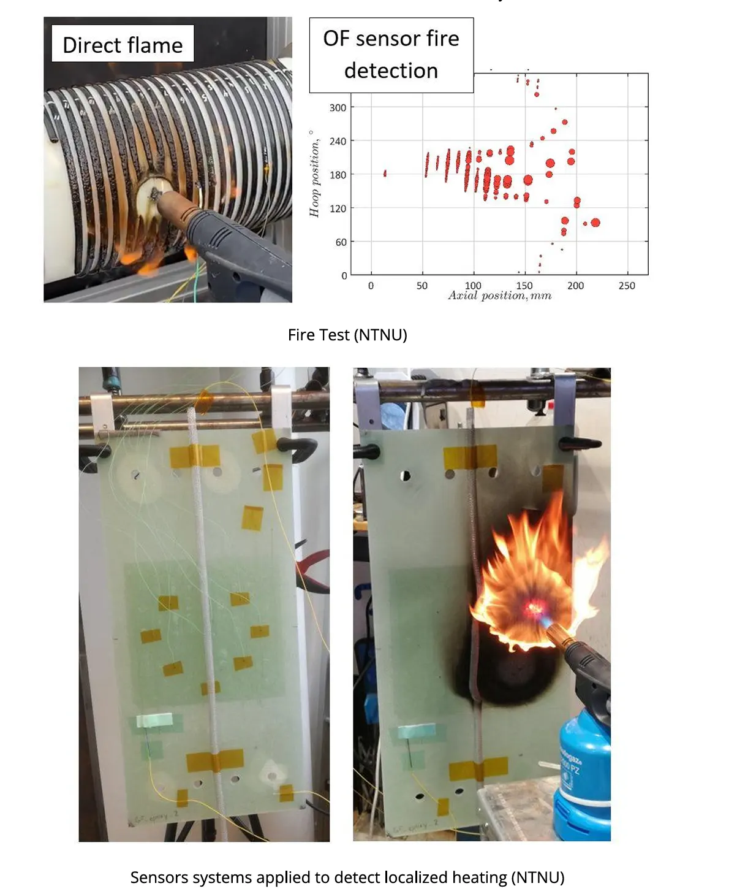
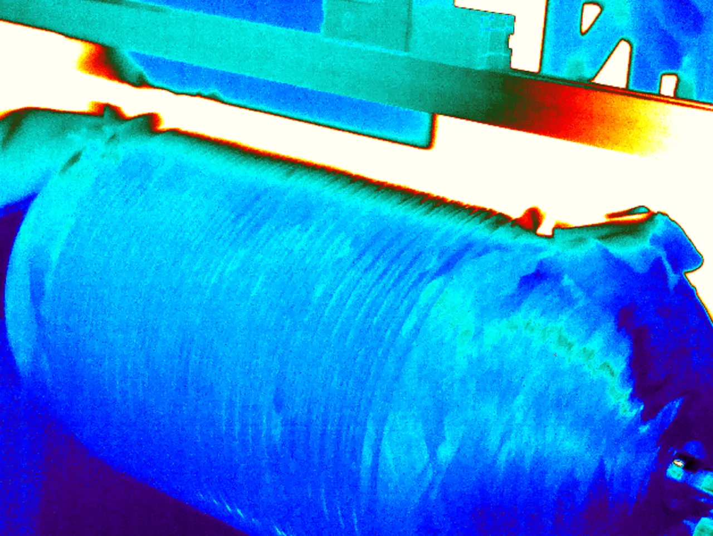
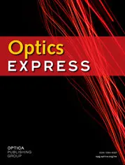

Integration of optical fibre sensors by material extrusion 3-D printing – The effect of bottom interlayer thickness
Shaoquan Wang; Kaspar Lasn
Materials & Design 221, 110914 · 2022
Optical fibre sensing research for hydrogen storage safety, including test specimens and pressure-vessel related experiments.
THOR investigated thermoplastic hydrogen tanks and their safety. The NTNU work focused on optical fibre sensing, temperature and strain separation, and experiments on specimens and pressure vessels.
Subproject Lead for NTNU optical sensing work




Shaoquan Wang; Kaspar Lasn
Materials & Design 221, 110914 · 2022
Shaoquan Wang; Erik Sæter; Kaspar Lasn
Sensors 21, 6879 · 2021

Shaoquan Wang; Kaspar Lasn
Optics Express 29(2) · 2021